| Фото | Експонат | Опис | Рік | Місце |
|---|---|---|---|---|
| 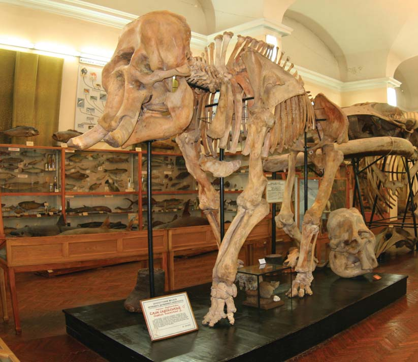 | Індійський слон | Другий за величиною наземний ссавець сучасного світу. Поширений в Південній та Південно-Східній Азії. | 1960 | ◼ 1, □ 12 |
| 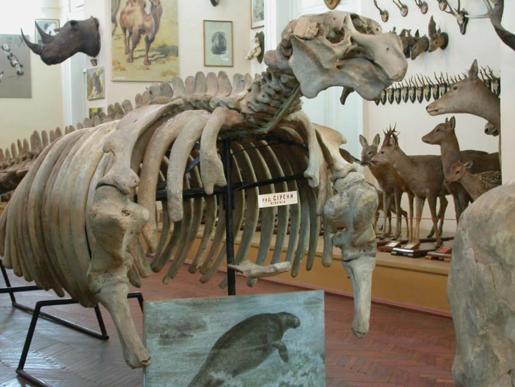 | Стеллерова морська корова | Викопна тварина знищена людиною у XVIII-му столітті. Мешкала в північній частині Тихого океану. | ???? | ◼ 1, □ 12 |
| 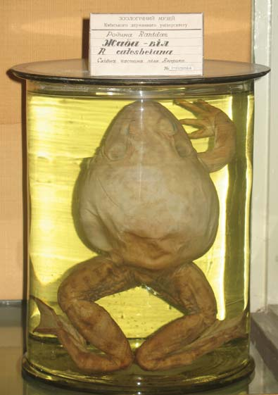 | Жаба-віл | Одна з найбільших жаб сучасного світу. Має гучний голос, що нагадує ревіння вола. | ???? | ◼ 1, □ 12 |
| 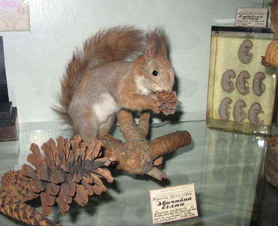 | Білка звичайна | (опис відсутній) | ???? | ◼ 1, □ 12 |
| 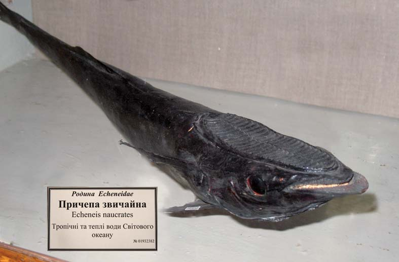 | Причепа звичайна | Має на голові великий присосок у формі диску, з його допомогою парами чіпляються до риб, черепах, китів. | ???? | ◼ 1, □ 12 |
| 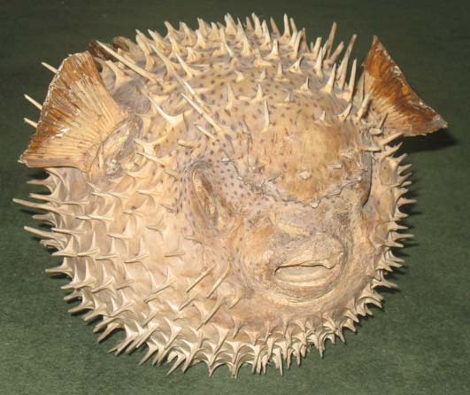 | Риба-куля | Тіло при небезпеці утворює кулю, вкриту гострими шипами. Поширена у тропічних і субтропічних водах океанів. | ???? | ◼ 1, □ 12 |
| 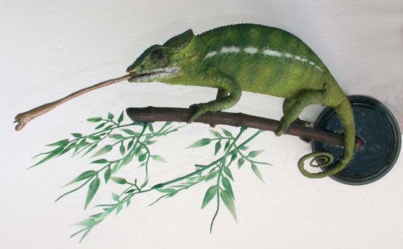 | Хамелеон звичайний | Може змінювати колір на блакитний і жовтий. Мешкає у Пд. Іспанії, о. Крит, Пн. Африці, Малій Азії, Сирії. | 1960 | ◼ 1, □ 12 |
| 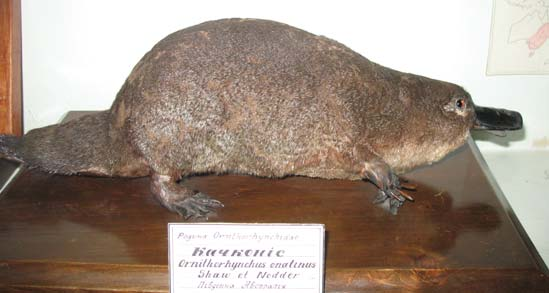 | Качконіс | Назву мешканець річок та озер Австралії та Тасманії одержав за мордочку, яка закінчується “качиним дзьобом”. | ???? | ◼ 1, □ 12 |
| 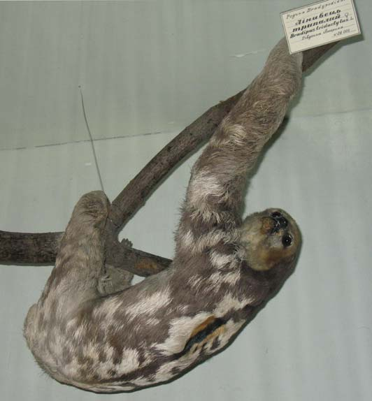 | Лінивець трипалий | У цього виду 9 шийних хребців – найбільша серед сучасних ссавців кількість. Голова може обертатися на 270. | ???? | ◼ 1, □ 12 |
| 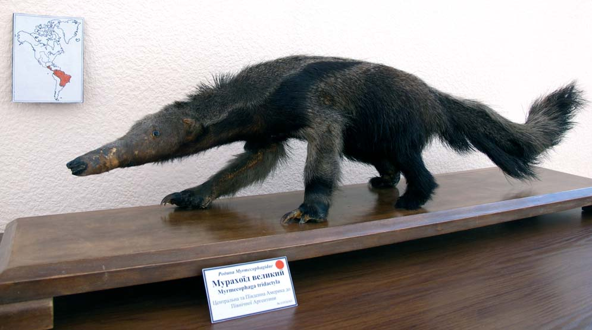 | Мурахоїд великий | Найбільші ссавці, що їдять комах; близько 1,2 м та 40 кг. Живе у степах і вологих лісах Пд. Америки. | ???? | ◼ 1, □ 12 |
| 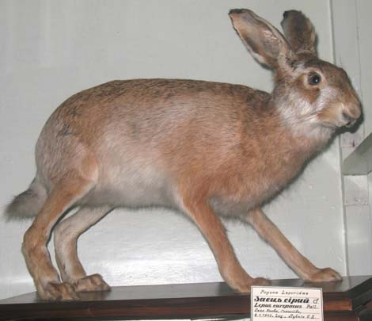 | Заєць сірий | У Пн. Україні крім нього трапляється занесений до ЧКУ заєць-біляк, зимове хутро якого майже цілком біле. | ???? | ◼ 1, □ 12 |
| 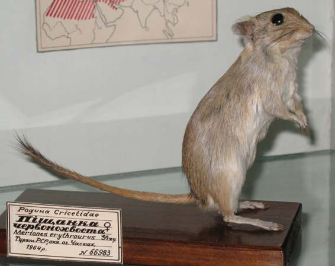 | Піщанка червонохвоста | Підземні ходи прокладає на глибині до 1-1,5 м. Основу живлення складає насіння та цибулинки рослин. | ???? | ◼ 1, □ 12 |
| 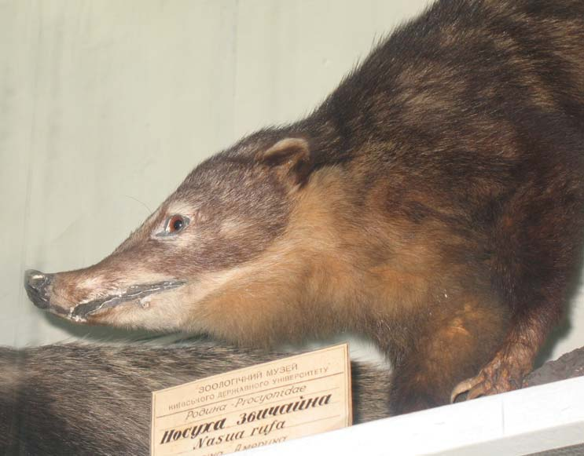 | Носуха | Свою назву цей родич єнота отримав за довгий дуже рухливий ніс, за допомогою якого розшукує їжу. | ???? | ◼ 1, □ 12 |
| 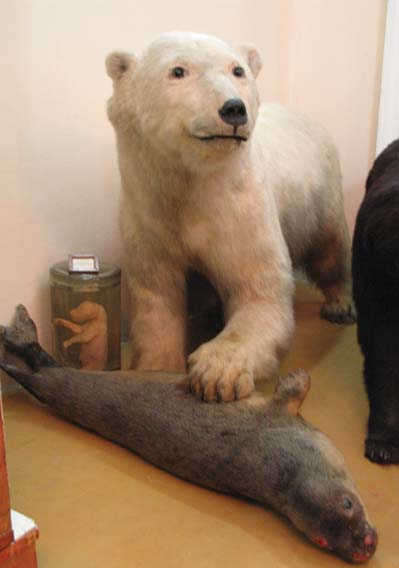 | Білий ведмідь | Найбільший із сучасних хижих ссавців суходолу, до 800 кг. Розповсюджений в арктичних широтах Європи, Азії, Пн. Америки. | ???? | ◼ 1, □ 12 |
| 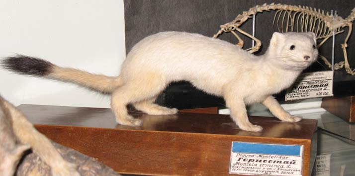 | Горностай | Рідкісний хижий ссавець лісів Європи та Азії влітку має двокольорне хутро: верх темно-коричневий, низ – білий. | ???? | ◼ 1, □ 12 |
| 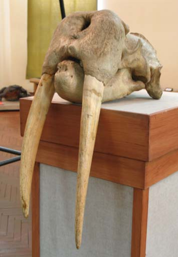 | Морж (череп) | Вага дорослих самців сягає 1,5-2 т, самиць – 800-900 кг. Характерна особливість моржів – величезні ікла (до 80 см). | ???? | ◼ 1, □ 12 |
| 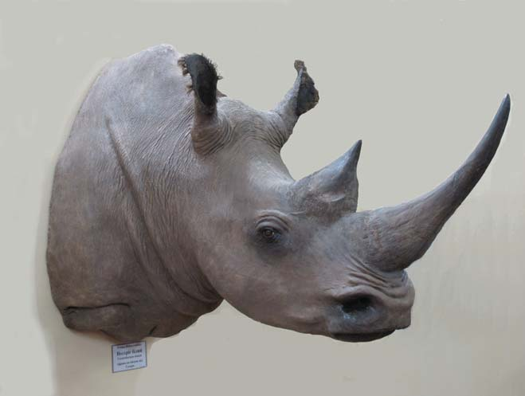 | Носоріг білий | Один із найбільших ссавців суходолу (вага до 3,5 т.). Розповсюджений у саванах Африки на південь від Сахари. | ???? | ◼ 1, □ 12 |
| 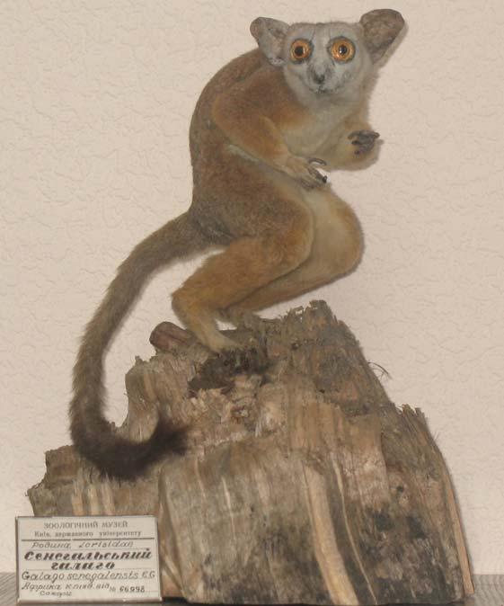 | Сенегальський галаго | Живе у вологих лісах Зх. Африки. Великі очі допомагають знаходити здобич (жуків, метеликів тощо) вночі. | ???? | ◼ 1, □ 12 |
| 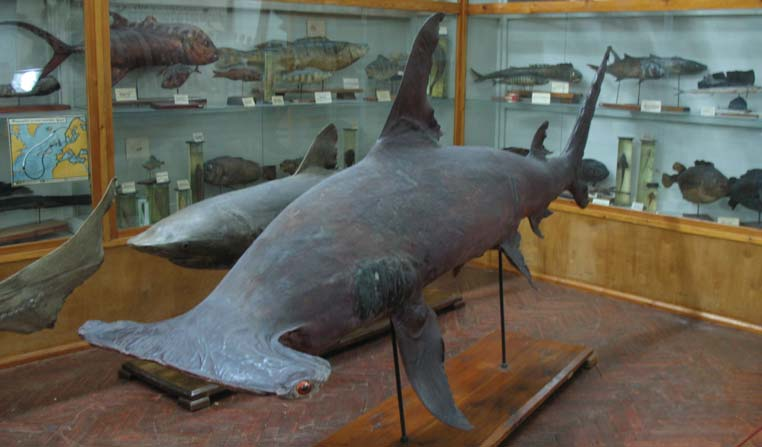 | Акула-молот | Одна з найбільших морських істот. Названа через форму голови. Поширена в тропічних водах Тихого, Індійського і Атлантичного океанів. | ???? | ◼ 1, □ 12 |
| 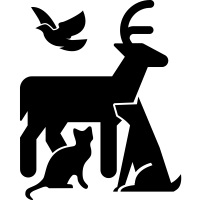 | Зразок (експонат) | Короткий опис на 105 символів короткий опис на 105 символів короткий опис на 105 символів короткий опис. | ???? | ◼ 1, □ 12 |
| Зразок (експонат) | Короткий опис на 105 символів короткий опис на 105 символів короткий опис на 105 символів короткий опис. | ???? | ◼ 1, □ 12 |
оригінальна розробка - Micah Lindley